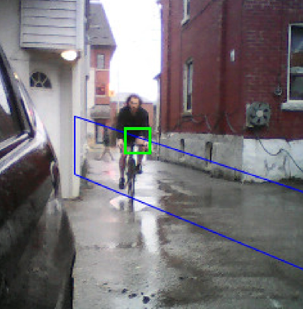
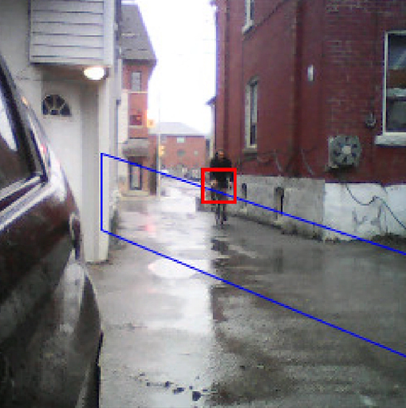
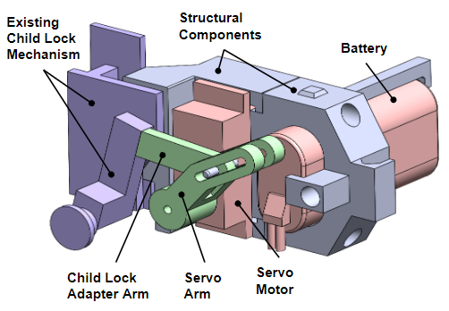

Dooring occurs when a cyclist collides with a parked car door that is opened in their path. This is unfortunately quite common in cities and can have serious consequences. Cyclists have little they can do to protect themselves from this type of collision for several reasons. The first is that it is extremely difficult to see whether there is a passenger inside of a parked car so there is usually no warning before the door is opened. Once it has been opened, the cyclist often does not have time to react and even if they do, swerving around the door is limited by passing car traffic.
A member of the Ontario provincial parliament has been working to bring awareness to this issue and requested that myself and three other students develop a solution prototype for this issue as our capstone project. The main goal of the project was to create a prototype that could prove the viability of a technological solution to this problem and which could also be used to demonstrate this to members of government and the public. Although there are numerous solution paths available for this problem, we chose to pursue a car mounted detection system which would alert passengers and prevent them from opening their door into the path of a cyclist.
For the cyclist detection part of the system, we used an Arduino Nicla Vision camera and a computer vision software called Edge Impulse. The computer vision software created a model that would analyze each frame captured by the camera and determine if it contained a cyclist or not. If a cyclist was detected with a certain degree of confidence, the model would send a signal to the mechanical control module.
 In order to prevent the door from opening, we retrofitted the lock of an existing door with a servo motor and a mechanism to actuate the child lock. This meant that we could disengage the door handle from the door latch, effectively preventing someone from opening the door even when they pull on the handle. We also incorporated a LED light to signal when there was an impending collision.The full system, removed from the door, can be seen in the title image.
During this project, I had the opportunity to work on each of the components and I feel that I grew my skills and knowledge considerably. One of the things that was the most challenging was managing the asynchronous nature of detecting a cyclist. After wrestling with it for a good amount of time, I am more confident in my ability to work with these types of systems and to choose the correct solution form. For example, one thing I could have done to save considerable time is to determine early on whether a simple polling control loop was sufficient or whether something more complex was necessary.
This was the first time I have had the opportunity to work with computer vision in a project context and I found it challenging but intriguing. The software we used to generate the vision model was extremely user friendly to the point that we were able to get a working model without much background knowledge. Because of this, we were limited to a few options for optimizing the model which I think hindered the effectiveness. In the future, I hope to get an opportunity to dive deeper and grow my understanding of this field because I can see the potential power it has.